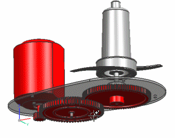

绕定义的中心点旋转
旋转模型时，模型一般绕位于视图中心的任意旋转中心旋转。但是，有时您需要旋转的点可能并不是位于视图中心附近。
绕临时旋转中心旋转
要快速绕临时的旋转中心旋转，在想要的旋转点处点击鼠标中键，短暂停留后拖动鼠标进行旋转。

设置永久旋转中心
使用设置旋转点命令可以创建一个与模型相关的旋转中心。
在图形窗口背景中右击并选择设置旋转点，然后单击指定旋转点，系统将使用粗体加号指示该旋转点位置。

要恢复至标准旋转中心点，右键单击并选择清除旋转点。
位于何处？
|
快捷菜单 |
在图形窗口背景中右击并选择设置旋转点 |